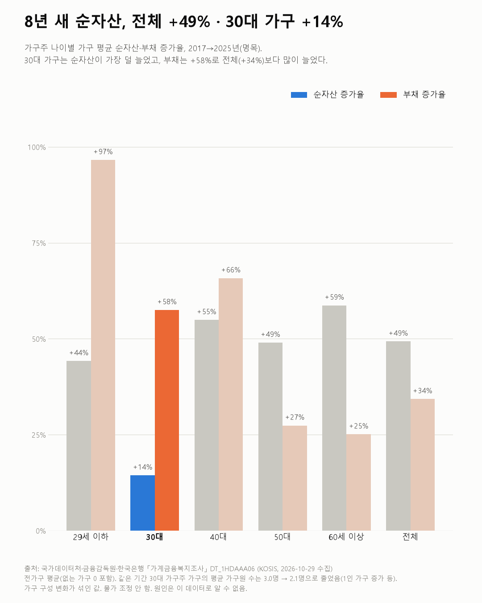
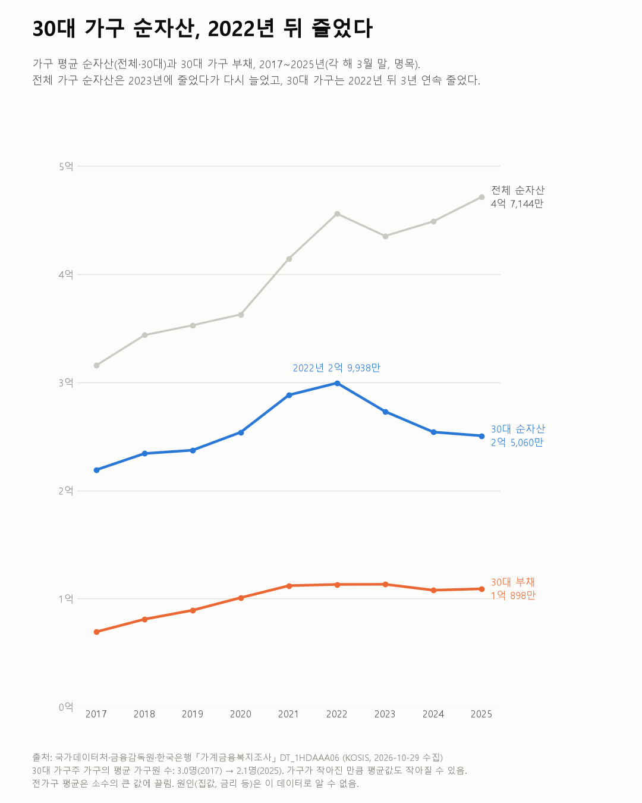

8년 새 순자산, 전체 +49% · 30대 가구 +14%
가계금융복지조사 2017~2025

질문
가구주가 30대(30~39세)인 가구의 자산·부채·소득은 2017년부터 2025년까지 어떻게 바뀌었나? 전체 가구와 비교하면 무엇이 더 빨리 늘었나?
사용 데이터와 출처
| 데이터 | 출처 | 쓰임 |
|---|---|---|
| 가구주연령계층별(10세) 자산, 부채, 소득 현황 (KOSIS DT_1HDAAA06) | 국가데이터처·금융감독원·한국은행 「가계금융복지조사」 | 가구주 나이별 가구 평균 자산·부채·순자산·소득·가구원 수, 2017~2025년 |
- 연도는 조사한 해다. 자산·부채는 그해 3월 31일 기준, 소득은 전년도 1년간이다(표 주석).
- 값은 "전가구 평균"(해당 항목이 없는 가구는 0으로 넣은 평균)이다. 확인용으로 "보유가구 중앙값"도 봤다.
- 부채 = 금융부채 + 임대보증금. 순자산 = 자산 − 부채.
- 검증: 모든 연도·나이대에서 자산 − 부채 = 순자산, 금융자산 + 실물자산 = 자산, 금융부채 + 임대보증금 = 부채가 맞는지 확인했다.
- 교차 확인: 2025년 전체 가구 평균 자산 5억 6,678만 원, 순자산 4억 7,144만 원은 보도된 2025년 가계금융복지조사 결과와 같다.
- 금액은 명목이다. 물가 조정은 하지 않았다.
- 수집일: 2026-10-29 (KOSIS 오픈API).
인사이트
1. 2017→2025년 가구 평균 순자산은 전체 +49.3%, 30대 가구 +14.4%다. 나이대 중 30대 가구가 가장 덜 늘었다. 29세 이하는 +44.2%, 40대 +54.9%, 50대 +49.0%, 60세 이상 +58.7%다.
2. 30대 가구의 부채는 +57.5%로 전체(+34.3%)보다 많이 늘었다. 6,920만 원에서 1억 898만 원이 됐다. 자산 대비 부채 비율은 24.0%에서 30.3%로 높아졌다. 전체 가구는 18.4%에서 16.8%로 낮아졌다.
3. 30대 가구 순자산은 2022년 2억 9,938만 원이 가장 많았고, 그 뒤 3년 연속 줄어 2025년 2억 5,060만 원이다. 전체 가구는 2023년에 한 번 줄었다가 2024·2025년 다시 늘었다.
4. 같은 기간 30대 가구는 작아졌다. 평균 가구원 수가 3.0명에서 2.1명으로 줄었다(전체 2.8명 → 2.3명). 30대 가구주 가구의 모습이 8년 전과 다르다는 뜻이고, 평균 자산이 덜 늘어난 데에는 이 변화가 섞여 있다.

한계
이 데이터로 말할 수 없는 것
- 가구 구성이 바뀌었다(가장 큰 한계). 30대 가구주 가구의 평균 가구원 수가 3.0명에서 2.1명으로 줄었다. 확인용으로 순자산을 가구원 수로 나눠 보면 30대 +60.5%, 전체 +82.5%다. 차이는 줄지만 30대가 덜 늘었다는 방향은 같다. 다만 가구원 수로 나누는 것은 공식 지표가 아니다.
- 평균은 큰 값에 끌린다. 순자산이 있는 가구의 중앙값으로 보면 30대 −1%(1억 5,732만 → 1억 5,585만 원), 전체 +27%다. 방향은 평균과 같다.
- 가구주 나이 기준이다. 30대 개인이 아니라 30대가 가구주인 가구다. 부모와 함께 사는 30대는 대개 여기에 들어가지 않는다.
- 명목 금액이다. 같은 기간 물가 상승은 반영하지 않았다.
- 시점이 다르다. 자산·부채는 3월 말, 소득은 전년도 값이다.
- 원인은 말하지 않는다. 집값, 금리, 대출 규제, 1인 가구 증가 등 이유는 이 데이터로 알 수 없다.
- 투자나 대출을 권하는 글이 아니다. 자산 종류별(주식 등) 비교는 하지 않았다.
전제 기록
데이터를 보기 전에 적어둔 것, 그리고 보고 나서 바꾼 것
- 전제 기록(premises)(데이터를 받기 전에 작성)를 따랐다.
- 전제 1(중앙값으로 방향 확인)과 전제 3(가구원 수 확인)은 계획대로 했다. 가구원 수 변화가 커서 인사이트 4와 한계 첫 줄로 올렸다.
- 가구원 수로 나눈 비교는 결과를 본 뒤 추가한 확인이다. 결론 방향은 바뀌지 않았다.